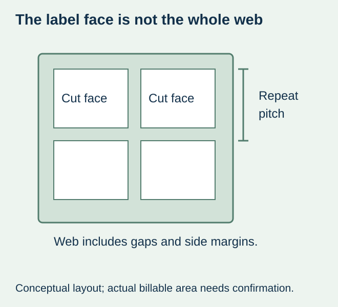
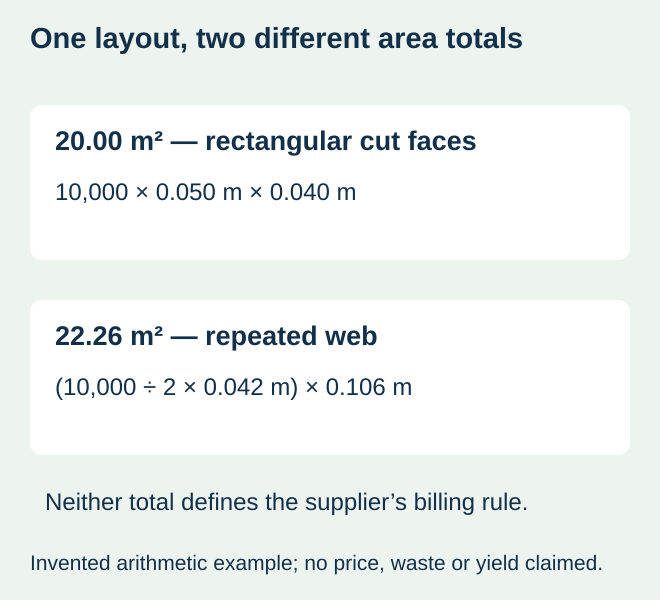

A food brand receives a price for finished jar labels by the thousand and another figure expressed per square metre. Multiplying the second figure by the visible printed rectangles seems straightforward. It may also compare raw material with a finished product, or use a different area from the supplier’s billing basis.
Ask what the square metre represents before converting the quotation. Distinguish the finished cut-label area, the web carrying those labels and the area the supplier actually charges. Then confirm that printing, conversion, finishing and delivery describe the same order. An area conversion cannot fill an omitted service or establish a lower price by itself.


Name the physical area
| Quantity | What it represents | Question for the actual offer |
|---|---|---|
| Net label-face area | The sum of finished cut shapes | Is this the priced area, or only a design calculation? |
| Repeated web area | Web width multiplied by label-bearing web length | Which side margins and gaps does this include? |
| Additional supplied/processed material | Identified leaders, trailers or other actual material | Is it included, separately charged or excluded? |
| Billable area | The supplier’s confirmed commercial definition | Does rounding, a minimum or another agreed rule apply? |
| Finished useful quantity | Accepted label pieces by component and artwork | What count and permitted exceptions are offered? |
These definitions are questions, not a claim that every printer prices the same way. A quotation may already include material, printing and converting in one finished-piece price. Another may describe stock alone. Obtain the written scope rather than reconstruct the printer’s internal cost model from dimensions.
Work through one layout without inventing a price
For arithmetic only, imagine 10,000 rectangular labels, each 50 mm across by 40 mm along the web. The proposed drawing has two labels per complete repeat, a 42 mm machine-direction pitch and a 106 mm web width. This is a fictional layout, not a supported machine format, material yield, quotation or minimum.
| Calculation | Illustrative result | Limit |
|---|---|---|
| Finished face area | 10,000 × 0.050 m × 0.040 m = 20.00 m² | Rectangular cut faces only |
| Complete repeats | 10,000 ÷ 2 = 5,000 | No mixed or partial repeats assumed |
| Repeated web length | 5,000 × 0.042 m = 210 m | Additional lengths and losses excluded |
| Repeated web area | 210 m × 0.106 m = 22.26 m² | Not automatically the billable area |
Both 20.00 m² and 22.26 m² are consistent with this idealized layout, but they describe different things. The difference is not evidence of overcharging or measured waste. Actual production can include other material and commercial conditions. Irregular cut shapes also need their actual area; multiplying a bounding rectangle does not give every shape’s net face area.


Use the drawing as an input, not an applicator approval
HERMA’s label calculator separately identifies label height, vertical distance and quantities in its roll-planning inputs. It is a manufacturer planning tool, not this site’s pricing engine or a statement of how any supplier bills material. The web-repeat guide explains the separate length calculation and equipment limits.
Keep units explicit: convert millimetres to metres before multiplying an area. Ask the supplier whether the width is finished label width or full web width, and whether the length is the repeated label region or another defined amount. Where the actual layout is unknown, request it or obtain a directly comparable finished-piece offer instead of assigning a convenient number of labels across.
Compare confirmed totals only after the scope matches
If an offer charges an identified area at a confirmed rate, use that stated area and rate, then add only separately confirmed charges. Do not add conversion again if it is already included. Equally, do not present a raw-stock calculation as the complete cost of printed, die-cut and wound labels.
If a material minimum exceeds the area required by the label plan, ask what the supplier actually proposes to deliver and charge. The extra area might remain stock, become additional labels or be handled another agreed way. None follows automatically from the unit m². Record ownership, quantity and future-use assumptions only as actually confirmed.
Keep the purchasing outcome concrete
For a hypothetical sauce launch, the useful result is a quoted quantity of the agreed construction and format, with the priced area and included work explainable. It is not a claim that an area-based supplier is cheaper or that one calculation eliminates setup costs.
Use the quotation baseline for currency, delivery and specification differences. Preserve the supplier’s original wording beside the converted view. If the unit or scope remains unanswered, leave the comparison incomplete rather than rank the offers on an assumed denominator.
Discuss the unresolved label requirement
Send the finished size, quantity per artwork, repeat drawing if provided, web width/pitch and the supplier’s exact unit and area definition. State whether the offer is for raw stock or finished printed and converted labels. Review the food-label product scope and prepare a label specification inquiry. The contact page opens an email draft and lists email or WhatsApp for attachments. Supply, proof options, testing, pricing and timing require project confirmation.